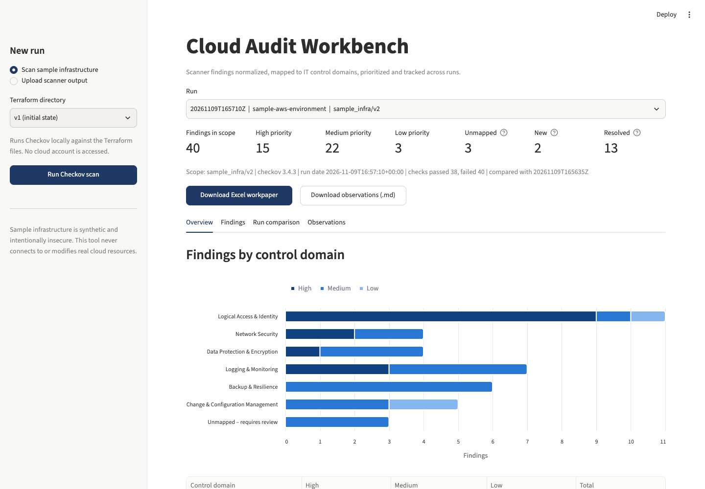
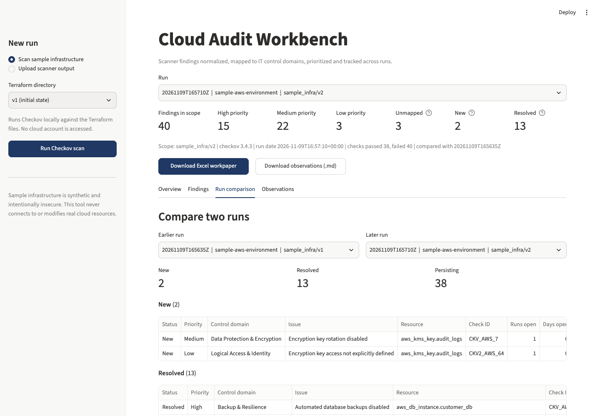
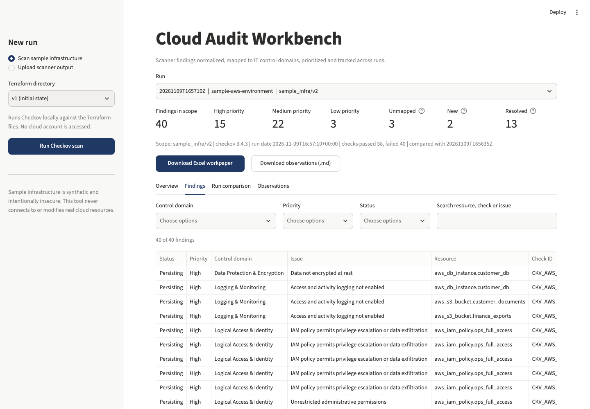

The problem
| A scanner gives you | An auditor needs |
|---|---|
CKV_AWS_24 FAILED aws_security_group.admin_access | Which control failed: remote administrative access is restricted to approved networks |
| A rule title | The business risk in plain language, and a recommendation |
| A severity, sometimes (open-source Checkov leaves it empty) | A documented, explainable priority |
| A point-in-time list | Remediation status across reviews: New, Resolved, Persisting |
| JSON | A workpaper with scope, evidence and sign-off fields |
How it works
Every finding is normalized into one schema and given a stable ID built from tool, check and resource. File paths and line numbers are excluded, so the same issue is recognized in the next review even when the code moves.
An editable YAML file maps each check to one of six IT control domains, with a control objective, the business risk and a recommendation. Checks that have not been assessed go to Unmapped – requires review instead of being guessed. Framework references (CIS and similar) are shown only when the scanner supplies them; none are invented.
Results on the sample environment
Version 1 of the sample infrastructure was scanned, then version 2, in which about half the issues were fixed and one new issue was introduced while remediating. Output from Checkov 3.4.3:
| Control domain (v2) | High | Medium | Low | Total |
|---|---|---|---|---|
| Logical Access & Identity | 9 | 1 | 1 | 11 |
| Network Security | 2 | 2 | 0 | 4 |
| Data Protection & Encryption | 1 | 3 | 0 | 4 |
| Logging & Monitoring | 3 | 4 | 0 | 7 |
| Backup & Resilience | 0 | 6 | 0 | 6 |
| Change & Configuration Management | 0 | 3 | 2 | 5 |
| Unmapped – requires review | 0 | 3 | 0 | 3 |
| Total | 15 | 22 | 3 | 40 |
An observation, as reported
Administrative ports open to the internet High
- Control domain
- Network Security
- Criteria
- Remote administrative access is restricted to approved networks and users.
- Condition
- 2 checks failed on 1 resource:
aws_security_group.admin_access(SSH port 22 and RDP port 3389 open to 0.0.0.0/0). - Risk
- Remote login services can be reached by anyone on the internet, which invites automated password-guessing and exploitation attempts against servers.
- Recommendation
- Restrict SSH and RDP to a corporate IP range or bastion host, or replace direct access with AWS Systems Manager Session Manager.
- Status
- Persisting: open across 2 reviews.
Prioritization rules
- Baseline from scanner severity. If the scanner gives none, use the reviewer-set default in the control mapping.
- Data stores (buckets, databases, volumes) are raised one level.
- Public exposure (reachable from the internet) is High.
- Logging gaps are at least Medium.
Each finding records which rules applied, so every priority in the workpaper can be explained.
Screenshots



Run it locally
The interactive app is a Streamlit (Python) application, so it runs locally rather than on this static page.
git clone https://github.com/oneDotpy/cloud-audit-workbench.git
cd cloud-audit-workbench
python3.11 -m venv .venv && source .venv/bin/activate
pip install -r requirements.txt
python -m src.pipeline scan sample_infra/v1
python -m src.pipeline scan sample_infra/v2
python -m pytest
python -m streamlit run app.pyLimitations
- Assesses infrastructure-as-code as written, not deployed resources.
- Relies on the scanner's tests; it does not re-perform them.
- The Prowler sample is hand-written to match Prowler 4.x JSON output, not produced by a live scan.
- Renaming a resource shows as one Resolved and one New finding.